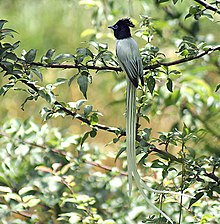

Himachal is in the western Himalayas, covering an area of 55,673 square kilometres (21,495 sq mi), it is a mountainous state. The Zanskar range runs in the northeastern part of the state and the great Himalayan range run through the eastern and northern parts, while the Dhauladhar and the Pir Panjal ranges of the lesser Himalayas, and their valleys, form much of the core regions. The outer Himalayas, or the Shiwalik range, form southern and western Himachal Pradesh. At 7,025 m, Shilla is the highest mountain peak in the state of Himachal Pradesh
According to 2003 Forest Survey of India report, legally defined forest areas constitute 66.52% of the area of Himachal Pradesh. Vegetation in the state is dictated by elevation and precipitation. The state is endowed with a high diversity of medicinal and aromatic plants. Lahaul-Spiti region of the state, being a cold desert, supports unique plants of medicinal value including Ferula jaeschkeana, Hyoscyamus niger, Lancea tibetica, and Saussurea bracteata.
